Visual Builder Studio(VBS)はプロジェクトのアジャイル開発、コラボレーション開発、ソースコード管理、CICDをサポートする機能を提供するPaaSサービスです。VBSはVisual Biulder Cloud Service(VBCS)アプリケーションのプロジェクト管理する機能があり、VBSで管理することによってビジュアル・アプリケーションのバージョン管理、issue管理、チーム開発をサポートすることができます。
このチュートリアルでは、VBSを使ってVBCSプロジェクトを作成し、簡単なアプリケーションを作成してマージリクエストの承認をトリガーに更新する手順を学習します。
Visual Builder Studioについて
VBSはOracle Cloud Infrastructure(OCI)契約者様は無償でご利用可能です。VBSにはデフォルトでGit Repository、Wikiのメタデータ用に20 GBのストレージが含まれています。尚、ビルドジョブの機能を利用する際は処理を実行するビルド用インスタンスに対して別途課金が発生します。詳細はこちらをご確認ください。
前提条件
-
Oracle Integration Cloud インスタンスの作成 が完了している、またはVBCSのインスタンスが作成出来ていること。
-
(OICのVBCSを利用する場合) ServiceAdministrator ロールが付与されたユーザーが準備されていること
(参考) Oracle Integration Roles and Privileges
https://docs.oracle.com/en/cloud/paas/integration-cloud/integration-cloud-auton/oracle-integration-cloud-roles-and-privileges.html#GUID-44661068-C31A-4AB5-BC24-B4B90F951A34
0.事前準備
まずはじめにVBSで利用するコンパートメントの作成をします。
Visual Builder Studio用コンパートメントの作成
コンパートメントについて
Oracle Cloudにはコンパートメントという考え方があります。
コンパートメントは、クラウド・リソース(インスタンス、仮想クラウド・ネットワーク、ブロック・ボリュームなど)を分類整理する論理的な区画で、この単位でアクセス制御を行うことができます。また、OCIコンソール上に表示されるリソースのフィルタとしても機能します。
まず初めに、後ほど実施するVisual Builder Studioのセットアップで利用するコンパートメントを作成します。
OCIコンソールにログインします。
ハンバーガーメニューの”アイデンティティとセキュリティ”⇒”コンパートメント”をクリックします。

“コンパートメントの作成”をクリックします。

以下の情報を入力します。

| key | value |
|---|---|
| 名前 | コンパートメント名を入力します。今回は”VBS”とします。 |
| 説明 | コンパートメントに対する説明を入力します。今回は”VBS用コンパートメント”とします。 |
| 親コンパートメント | 作成するコンパートメントの親となるコンパートメントを選択します。今回はデフォルトのままにします。 |
“コンパートメントの作成”をクリックします。
以上でコンパートメントの作成は完了です。
1.ワークショップで利用するアカウント情報の収集
ここから、ハンズオンを進める上で下記の情報が必要となります。取得した情報は後ほど使用するためメモ帳などに控えておいてください。
1.テナンシOCID
OCIコンソール画面右上の人型のアイコンをクリックし、展開したプロファイルから”テナンシ:<テナンシ名>"をクリックします。
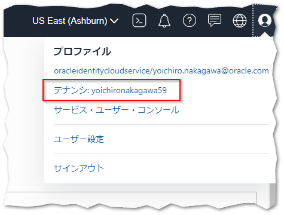
テナンシ情報”OCID”の右側にある”コピー”をクリックすると、テナンシOCIDがクリップボードにコピーされます。
この値は後の手順で利用しますので、テキストエディタにペーストするなどして控えておいてください。

2.ユーザOCID
OCIコンソール画面右上の人型のアイコンをクリックし、展開したプロファイルから”ユーザ名”(oracleidentitycloudservice/<ユーザ名>)をクリックします。

ユーザ情報が表示されますので、”OCID”の右側にある”コピー”をクリックすると、ユーザOCIDがクリップボードにコピーされます。

この値は後の手順で利用しますので、テキストエディタにペーストするなどして控えておいてください。
3.リージョン識別子
OCIコンソール左上のハンバーガーメニューを展開し、”ガバナンスと管理”⇒”リージョン管理”に移動します。

以下をコピーしてメモしてください。
- Region Identifier：リージョン識別子
USにあるデータセンター”US East (Ashburn)”を使用する場合”us-ashburn-1”になります。

4.APIキーの取得
ここでは、Visual Builder Studioのセットアップで使用するAPIキーの取得を行います。
OCIコンソール画面右上の人型のアイコンをクリックし、展開したプロファイルから”ユーザ名”(oracleidentitycloudservice/<ユーザ名>)をクリックします。
ユーザー詳細画面へ遷移するので、スクロールして”APIキー”をクリックします。

“公開キーの追加”をクリックします。

“公開キーの追加”ダイアログの入力欄が表示されます。
今回は、”APIキー・ペアの生成”にチェックし、”秘密鍵のダウンロード”をクリックし、API秘密鍵をダウンロード後に”追加”ボタンをクリックします。
ダウンロードしたAPI秘密鍵は、1.Visual Builder Studioのセットアップで使用するので、保管しておいてください。

以上でAPIキーの取得は完了です。
5.API Signingキーのフィンガープリント
API Signingキーのフィンガープリントは6.APIキーの取得の手順により、ユーザー詳細画面から確認できるようになっています。
ユーザー詳細画面で”APIキー”に移動します。
APIキーに表示されているフィンガープリントを確認します。

表示されている値をメモしてください。
6.コンパートメントOCID
OCIコンソール左上のハンバーガーメニューを展開し、”アイデンティティとセキュリティ”⇒”コンパートメント”に移動します。コンパートメント一覧からVisual Builder Studio用コンパートメントの作成で作成したコンパートメントに移動します。今回は”VBS”となっています。
以下のコピーをクリックしてメモしてください。
- OCID：コンパートメントOCID

7.オブジェクト・ストレージ・ネームスペース
OCIコンソール左上のハンバーガーメニューを展開し、”ガバナンスと管理”⇒”テナンシ詳細”に移動します。
以下をコピーしてメモしてください。
- オブジェクト・ストレージ・ネームスペース：オブジェクト・ストレージ・ネームスペース

以上でワークショップで利用するアカウント情報の収集が完了しました。
2.Visual Builder Studioのセットアップ
ここでは、Visual Builder Studioのセットアップを行います。
Visual Builder Studioのプロビジョニング
Oracle Cloud Infrastructure(OCI)コンソールにログインします。
左上のハンバーガーメニューをクリックし、”OCI Classic Services”⇒”Developer”をクリックします。

Visual Builder Studioのインスタンス画面が開きます。
右上の”インスタンスの作成”ボタンをクリックします。

インスタンス作成画面が開くので、以下の情報を入力し、”次”ボタンをクリックします。
| key | value |
|---|---|
| Instance Name | Visual Builder Studioのインスタンス名。今回は”Handson” |
| Description | Visual Builder Studioインスタンスの概要説明。今回は設定しない。 |
| Notification Email | Visual Builder Studioに関する通知先のメールアドレス。今回は設定しない。 |
| Region | Visual Builder Studioインスタンスを作成するリージョン。今回は”us-ashburn-1” |
| Tags | Visual Builder Studioインスタンスに設定するタグ。今回は設定しない。 |

インスタンス作成の確認画面が表示されます。
“作成”ボタンをクリックします。

インスタンス作成がリクエストされます。Statusが”Creating service”になっていることを確認します。
インスタンス作成の完了までしばらく時間がかかります。

インスタンス作成が完了したら、作成したインスタンスの右端にあるハンバーガーメニューをクリックし、”Acccess Service Instance”をクリックします。
また、VBSのコンソールのURLをコピーしておきます。
このURLは3.管理先のVBCS環境の設定変更の手順で利用します。

Visual Builder Studioにアクセスできない場合
以下のエラーメッセージが表示された場合、以下の対応をお願いいたします。
このサイトにアクセスできません
https://psm-cacct-xxxxxxxxxxxxxxxxxxxxxxxxxxxxxxxx.console.oraclecloud.com/administration/faces/JaaSRunner.jspx のウェブページは一時的に停止しているか、新しいウェブアドレスに移動した可能性があります。
ERR_RESPONSE_HEADERS_TRUNCATED
- 社内プロキシなどを利用している参加者の皆様で社内プロキシを回避可能な場合は、社内プロキシを経由しないネットワーク環境でお試しください。
Visual Builder Studioのアカウント設定
Visual Builder Studioのメニューが表示されます。最初にVisual Builder Studioを利用するにあたって必要な情報を入力する必要があります。
画面上部に表示される”OCI Account”のリンクをクリックします。

画面中央部にある”Connect”をクリックします。

Visual Builder Studioを利用するために必要な情報を入力していきます。
入力する内容は1.ワークショップで利用するアカウント情報の収集で収集した情報です。
| key | value |
|---|---|
| Tenancy OCID | 1.テナンシOCIDで収集した値 |
| User OCID | 2.ユーザOCIDで収集したユーザーOCID |
| Home Region | 3.リージョン識別子で取得した値。今回は”us-ashburn-1” |
| Private Key | 4.APIキーの取得でダウンロードしたAPI秘密鍵の内容を貼り付け |
| Passphrase | パスフレーズ。今回は未入力。 |
| Fingerprint | 5.API Signingキーのフィンガープリントで収集したAPI Signingキーのフィンガープリント(Private Keyを入力すると自動的に設定される) |
| Compartment OCID | 6.コンパートメントOCIDで収集したコンパートメントOCID |
| Storage Namespace | 7.オブジェクト・ストレージ・ネームスペースで収集したオブジェクト・ストレージ・ネームスペース |
情報の入力が完了したら、画面下部の”validate”ボタンをクリックします。
Validateに成功すると が表示されます。
が表示されます。
Validateが成功したら”Save”ボタンをクリックします。

以下のように画面が表示されれば、Visual Builder Studioのセットアップが完了です。

3.管理先のVBCS環境の設定変更
VBSからVBCS環境を操作するためにCORSの設定を追加します。
注意
こちらの手順はあらかじめ用意したOracle Integration Cloudに含まれるVBCS、または単体でプロビジョニングしたVBCS環境で実施してください。
VBCSのコンソール画面を開き、左上のメニューから”Setting”を開きます。
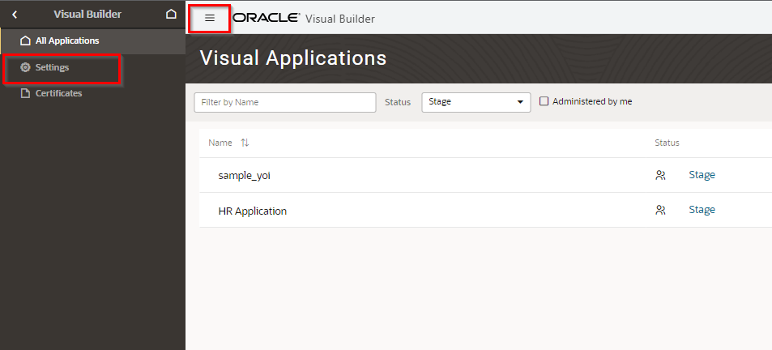
“Setting”の画面で”New Origin”をクリックします。

インプット・ボックスが表示されるので、VBSコンソールのURLを入力し、”✓”をクリックします。

以上でCORSの設定は完了です。
4.プロジェクトの作成
このパートではVBSを利用してビジュアル・アプリケーションのプロジェクトを作成し、初期設定として必要な手順を学習します。
プロジェクトの作成
前パートでプロビジョニングしたVBSのコンソール画面から”Create”ボタンをクリックします。

表示されたダイアログにプロジェクトの詳細情報を入力します。今回は以下の内容を入力します。
“Next”をクリックします。
| 設定項目 | 設定する値 |
|---|---|
| Name | VisualAppProject |
| Description | VisualAppProject |
| Security | Privateにチェック(デフォルト) |
| Preferrd Language | Japanese - 日本語を選択 |

次はプロジェクトのテンプレートタイプを選択します。
今回はVBCSアプリケーションを作成するので”Visual Application”を選択します。
“Next”をクリックします。

最後にプロジェクトの詳細情報を入力します。
今回は以下の内容を設定し、”Finish”をクリックします。
| 設定項目 | 設定する値 | 説明 |
|---|---|---|
| Git Repository Name | visualappproject.git(デフォルト) | プロジェクトのGit Repositoryの名前 |
| Development VB Instance | 任意のOICインスタンス、またはVBCSインスタンス | プロジェクトで作成するビジュアル・アプリケーションを作成するインスタンス |
| Visual App Template | Default VBCS Application(デフォルト) | 作成するビジュアル・アプリケーションのテンプレート |
| Workspace Name | workspace1(デフォルト) | ワークスペース名 |
| Work Branch Name | branch1(デフォルト) | Git Repositoryで使用するブランチ名 |

以下の画面が表示され、プロジェクトの作成が開始されます。
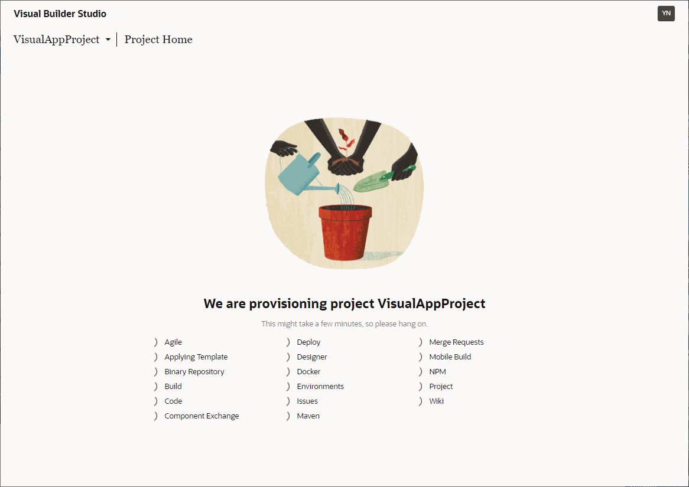
プロジェクトの作成が完了したら、自動的にプロジェクトの管理画面に遷移します。

下にスクロールしてRecent Activiytyを確認すると、プロジェクトでGit Repositoryやブランチが作成されているのが確認できます。

以上でプロジェクトの作成は完了です。
ビルド・ジョブの設定
次にビルド・ジョブの設定をします。
VBSではプロジェクト作成時にアプリケーションのデプロイ用のビルド・ジョブが自動的に作成されていますが、認証情報はまだ設定されていないので正しい情報を設定する必要があります。
左にあるメニューから”Builds”をクリックします。
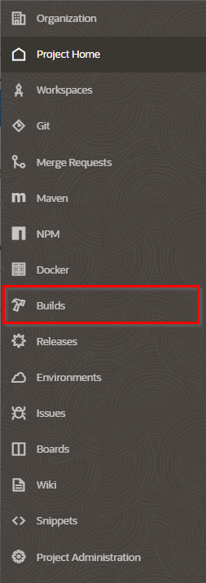
Biuldsの画面では既に2つのビルド・ジョブが作成されていることが確認できます。
| ジョブ名 | 説明 |
|---|---|
| Visual-Application-Deploy | ビルド・アーティファクトをVisual Builder開発インスタンス、実動インスタンス、またはその他のインスタンスにデプロイするジョブ |
| Visual-Application-Package | ビジュアル・アプリケーションのビルド・アーティファクトをパッケージ化するジョブ |
TIPS
これら2つのジョブはプロジェクト上のGit Reposirtoryのmainブランチの更新をトリガーにしているため、他のブランチからmainブランチへマージが実行されるとこれらのジョブが自動的に起動し、ビジュアル・アプリケーションが更新・デプロイされます。
“Visual Application Deploy”をクリックします。

“Configure”をクリックします。
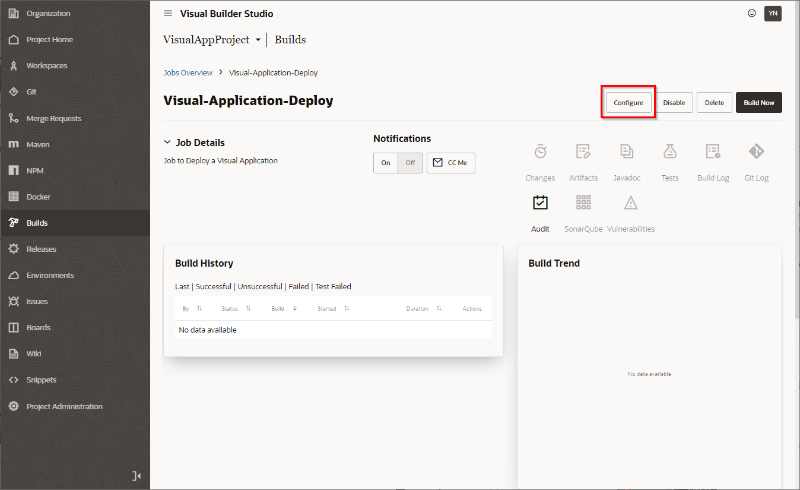
“Steps”タブをクリックし、”Oracle Deployment”のStepを修正します。
UsernameとPasswordの初期値はダミーになっているので、正しいユーザー情報を設定します。
ビルド実行時に以下のようなエラーが発生した場合
ビルド実行時に以下のエラーメッセージが表示された場合、お手数ですがこの手順で設定するユーザーをOCIにフェデレーションされていないIDCSアカウントを別途用意して再度お試しください。
Error: Unable to obtain an access token from the user credentials in this build step. Make sure the username and password are correct for this step in the Job Config.

(オプション) プロジェクト・メンバーの追加
必須ではありませんが、ここではプロジェクト・メンバーの登録手順を紹介します。
プロジェクトのホーム画面から右にあるTeamタブを開きます。

“Add Member”をクリックします。

インプットボックスから追加したいメンバーを検索し、メンバーに付与するアクセス・ロールを選択して”Add”をクリックします。

以上の手順でプロジェクト・メンバーを追加することができます。
TIPS
上記のアクセス・ロールに関してはこちらをご確認ください。
Git Repositoryの確認
次にプロジェクトのGit Repositoryを確認します。
左のメニューからGitをクリックし、Gitの画面へ遷移します。既にGit Repositoryの中に様々なリソースが作成されていることが確認できます。

TIPS
これらはVBCSで作成されるアプリケーションの実体になっています。このソースコードを直接編集し、アプリケーションを作成・編集することもできます。ローコードで視覚的に確認しながら作成する場合は次のステップでVBSプロジェクトからVBCSの画面を展開する手順を紹介します。
ワークスペースの利用
ビジュアル・アプリケーションのプロジェクトでは自動的にワークスペースというものが作成されています。ワークスペースはビジュアル・アプリケーションの定義をしているリソースで、VBCSインスタンスやGit Repository等が定義されています。
左のメニューから”Workspaces”をクリックして、ワークスペース画面を開きます。

Wrokspace1にvisualappproject.gitとbranch1が紐ついており、Developmentという環境が登録されていることが確認できます。DevelopmentをクリックするとEnvironmentの画面に遷移し、プロジェクト作成時に登録したVBCSインスタンス(またはOICインスタンス)の環境が確認できます。

VBCSのコンソールへ遷移するためには”Workspace1”をクリックします。

VBCSのコンソール画面へ遷移します。
左上の表示を見るとVBSで作成したワークスペース、Git Repository、ブランチで管理されている環境であることが確認できます。

次の手順で遷移したVBCSからビジュアル・アプリケーションを作成します。
5.ビジュアル・アプリケーションの作成
ここでは前パートで遷移したVBCSコンソールからビジュアル・アプリケーションを作成します。
アプリケーションの作成は本ハンズオンの本題ではないため、簡単なアプリケーションを作成します。
基本的なアプリケーションの作成について学習したい方はこちらをお試しください。
ビジュアル・アプリケーションの作成
VBCSコンソール画面から”Web Applications”から”＋Web Application”をクリックし、ダイアログで”Application Name”に”webapp4vbs”と入力し、”Create”をクリックします。

Webアプリケーションの土台ができたら、タイトル部分の”Bind Text”を選択し、右側のPropertiesからValueを”Employee”に変更します。

ビジネス・オブジェクトの作成
次にビジネス・オブジェクトを作成します。
メニューからビジネス・オブジェクトの画面へ遷移し、”employee”の名前で作成します。

右上の”＋”ボタンから以下の3つのフィールドを追加します。
| フィールド名 | Label | Type |
|---|---|---|
| 名前 | name | String |
| 入社日 | hireDate |  Date Date |
| Ｅメール |  Email Email |
追加後の画面は以下のようになります。

Employee.csvをダウンロードします。
Dataタブを開いて”インポート”アイコンをクリックします。
Import DataのダイアログでダウンロードしたEmployee.csvをドラッグアンドドロップし、”Import”をクリックします。

インポートが完了すると以下のようになります。

ビジネス・オブジェクトを画面へ表示
- Web Applicationタブからビジュアル・アプリケーションの作成で作成したmain-startを開きます。
- コンポーネントから”Table”をドラッグアンドドロップでmain-startに配置します。
- “Properties”から”Quick Start”－”Add Data”をクリックします。

“Business Objects”で”Employee”を選択し、”Next”をクリックします。

画面左の”Endpoint Structure”からname, hireDate, emailを選択し、”Next”をクリックします。

“Finish”をクリックします。

main-startに戻り、TableにEmployeeのデータが表示されます。

以上でビジュアル・アプリケーションの作成は完了です。
アプリケーションのプレビュー・共有・デプロイ
ビジュアル・アプリケーションの作成ができたら実際の画面を確認します。
アプリケーションの確認・共有
自身で確認する場合は右上のプレビューボタン(▷)で確認することができます。

メンバーに確認してもらう場合は右上のメニューから”Share”をクリックします。
この共有機能はGit Repositoryに変更をプッシュする前にビジュアル・アプリケーションをメンバー間で共有することができます。

ダイアログが表示されます。 共有するアプリケーションのURLが表示されます。 今回はそのまま”Share”をクリックします。

TIPS
“Active Application”は現在使用しているアプリケーションを指し、共有が成功すると右上のメニュー→”Open Shared Application”で開くことができます。今回は1つのアプリケーションしか作成していないので、”Active Application”と”Web Applications”が同じURLになっていますが、複数のアプリケーションを作成している場合はナビゲーションから選択することができます。
また、共有するアプリケーションにサンプルデータを含める、以前の状態を含める等、データの状態を選択することができます。詳細はこちらをご確認ください。
メンバーはURLを教えてもらって遷移するかもしくはVBSの”Environments”－”Deployments”から遷移することができます。

アプリケーションのコミット・プッシュ
画面の確認ができたら、Git Repositoryに変更をコミットします。
左上のGit Repositoryとブランチ名をクリックし、”Push”をクリックします。
TIPS
今回は最初からPushしますが、アプリケーションの変更が完了していない場合は一度自身のブランチへcommitして現在の状態を保存しておくこともできます。

ダイアログが表示されるのでコミット・コメントを入力します。今回は”新規作成”と入力します。
“Commit All and Push”をクリックします。

Pushに成功したメッセージが右下に表示されます。

TIPS
PushとShareのタイミングは任意です。開発中にデザインを確認したい場合はShareの機能で共有して確認できます。マージリクエストの際に確認する場合はPushしてから確認するなど、ワークロードによって最適な方法を選択できます。
mainブランチへのマージ
次は先ほどPushしたbranch1をmainブランチへマージします。
VBCSコンソール画面の右上にある”Publish”をクリックします。

Commit Messageに任意のメッセージを入力し、”Publish Changes” をクリックします。

“Close” をクリックします。
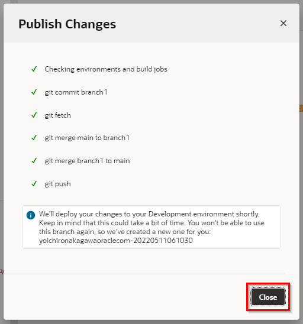
TIPS
“Publish Changes” をクリックすると自身のブランチのリソースがmainブランチへマージされ、自動的にVisual Builder Studioのビルドジョブが実行されます。ビルドジョブが実行されると本番環境へ作成したビジュアル・アプリケーションがデプロイされます。
次はデプロイされたアプリケーションのURIを確認します。 左上の “←” アイコンからVBSのコンソール画面へ戻ります。

左のメニュー－”Environments” から “Deployments” のタブを開き、Statusが “Deployed” になっているものがデプロイされたアプリケーションです。クリックするとアプリケーションが別タブで開かれます。

URLに遷移してみるとわかるようにライブアプリケーションのデータが空になっているのが分かると思います。VBSではコードのライフサイクルとデータのライフサイクルはべつのものに分かれています。次の手順ではライブアプリケーションのデータを登録する手順を説明します。
以上でmainブランチへのマージは完了です。
ライブアプリケーションへのデータ登録
次の手順ではライブアプリケーションのビジネス・オブジェクトにデータを登録する手順を学びます。
データの取得
まず登録するデータを取得します。
今回は開発時に登録したデータをそのまま利用します。
VBCSの画面からビジネス・オブジェクトを開き、メニュー－Data Managerから”Export All Data”をクリックし、全データをダウンロードします。

データ保管用Repositoryの作成
次はVBSの画面で操作を行います。左上の”←”から、VBSのコンソールへ戻ります。

データファイルはアプリケーションコードの一部ではないため、このファイルを保存するための個別のGitレポジトリを作成します。Project Homeの画面で右側にある”Repositories”から”Create Repository”をクリックします。

“Name”に”DataFiles”を入力し、”Create”をクリックします。

次に、データファイルをそのレポジトリにロードします。 “Clone”をクリックし、コピーアイコンからレポジトリのURLを取得したら、任意のターミナルからGitコマンドを利用してデータファイルをレポジトリにプッシュします。
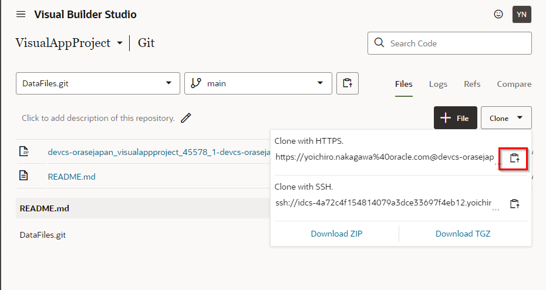
OCIコンソールからCloud Shellを利用してデータファイルをプッシュする場合
- OCIコンソールの右上にある “>_” アイコンからCloud Shellを起動する。

- Cloud Shellで
git clone {レポジトリのURL}を実行した後、cd {レポジトリのディレクトリ名}でレポジトリのディレクトリへ移動する。 - Cloud Shell上にデータファイルをドラッグアンドドロップしてインポートする。
git add .を実行する。git commit -m "データ登録"を実行する。git pushを実行する。
正常にプッシュできたらVBSのGit画面から確認することができます。

データ登録用ジョブの作成
次はデータをライブアプリケーションに登録するジョブを作成します。
“Builds”の画面へ遷移し、”Create Job” をクリックします。
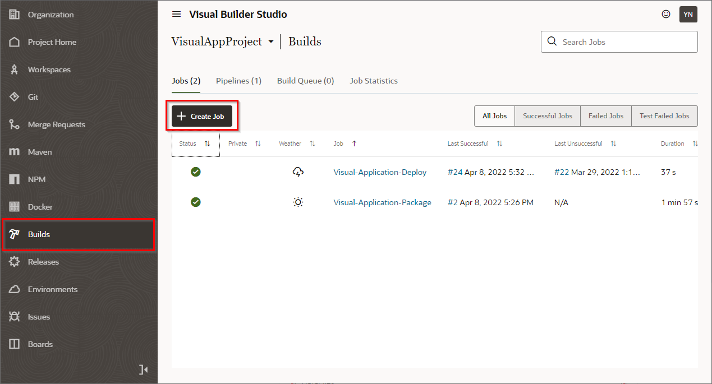
Name に “LoadData”, Template に任意の VMテンプレート(今回は”System Default OL7 for Visual Builder”)を選択し、”Create” をクリックします。
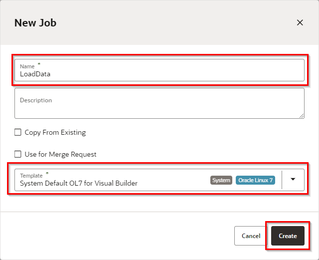
Job Configurationに遷移するので、Configure Gitで先ほど作成したレポジトリ”DataFiles.git”を設定します。

次に”Step”タブへ移動し、”Add Step”－”Visual Application”－”Import Data”を追加します。
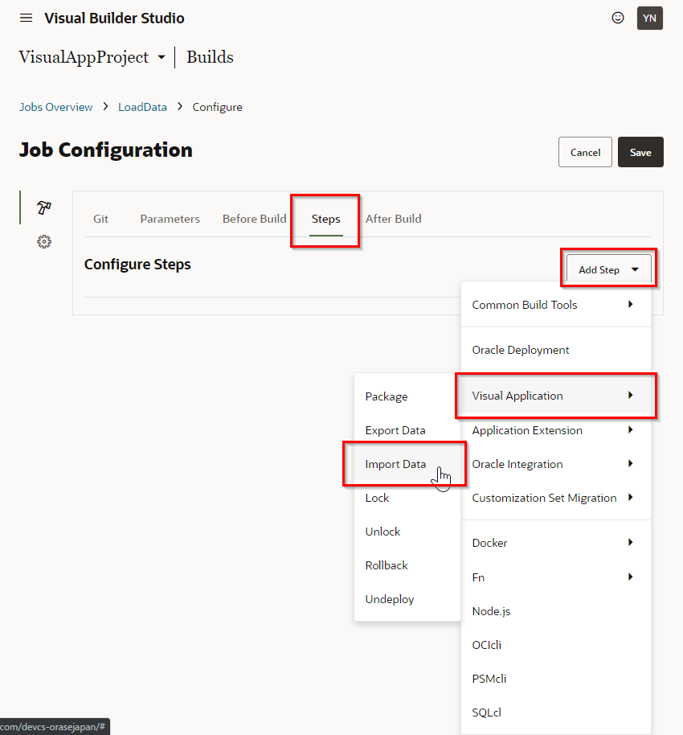
“Visual Application”のStepで利用しているVBCSインスタンスを設定します。

Instanceを選択すると入力項目が表示されるので、以下のように値を設定します。
| 設定項目 | 設定する値 |
|---|---|
| Instance | VBCSインスタンス |
| Username | ジョブを実行するユーザー名 |
| Password | ジョブを実行するユーザーのパスワード |
| Application URL Root | ※ライブアプリケーションのルートURL |
| Application Version | ※ライブアプリケーションのバージョン |
| Artifact | 反映するデータファイル名 |
※Application URL Root、Application Versionの参照元
“Application URL Root”、”Application Version”に設定する値はVBSコンソールから”Environments”－”Deployments”タブから確認できます。


設定が完了したら、”Save”をクリックして保存し、”Build Now”をクリックしてビルドを実行します。
ビルドが成功したら以下のような表示になります。
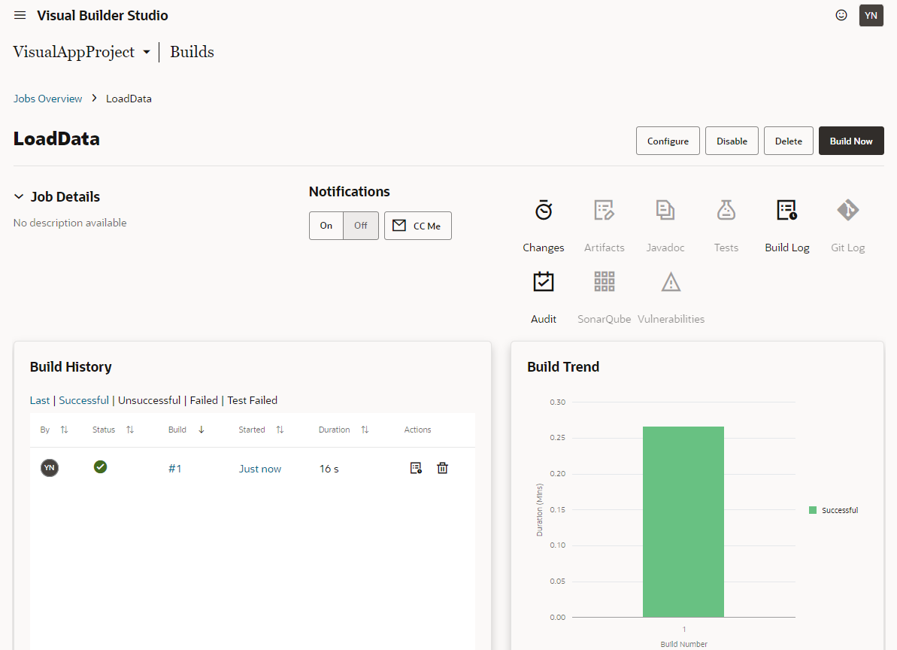
もう一度ライブアプリケーションをブラウザから確認すると、データが登録されていることが確認できます。

ジョブのパイプラインへの組み込み
最後に作成したジョブをアプリケーションをデプロイするジョブに組み込みます。そうすることでデプロイが完了した後に自動的にデータをインポートするジョブを実行することができます。
“Builds”画面から”Pipeline”タブを開き、設定アイコンをクリックします。

“Jobs”にある”LoadData”をドラッグアンドドロップで右側のキャンバスへ配置します。

“Visual-Application-Deploy”と先ほど配置した”LoadData”をドラッグアンドドロップで結びつけ、”Save”をクリックします。

以上でライブアプリケーションへのデータ登録は完了です。
パイプラインについて
パイプラインはVBSの個々のビルドジョブを連携させることができる機能です。
VBSで作成したビジュアル・アプリケーションのプロジェクトでは自動的に“Visual-Application-Package”と“Visual-Application-Deploy”がパイプラインで連携されているので、“Visual-Application-Package”でアプリケーションがビルドされた後に“Visual-Application-Deploy”が自動的に呼ばれてアプリケーションが環境へデプロイされます。
パイプラインについて詳しくはこちらをご確認ください。
コード変更の管理
次は公開されているアプリケーションを更新する手順を学習します。
今回は一度Pushした後、マージリクエストを作成して承認後にマージする手順を学習します。
画面の編集
VBCSのコンソール画面へ遷移し、”Page Designer”から画面の任意の場所を編集します。今回はタイトルを”Employees”から”Employees List”へ変更します。

左上のブランチ名から”Push”をクリックします。

任意のコメントを入力し、”Commit All and Push Branch”をクリックします。

成功したら以下のメッセージが表示されます。

次に”Publish”のボタンをクリックします。

今回は直接mainブランチへマージするのではなく、一度マージリクエストを作成し、メンバーの承認を経てマージする手順にします。以下のように入力し、”Publish Change”をクリックします。
| 設定項目 | 設定する値 |
|---|---|
| Merge After Review | 選択 |
| Description | 任意の説明 |
| Reviewer | レビューしてもらいたい任意のユーザー |
| Linked Issues | 紐付けたいIssue(今回は空) |

※issueについて
VBSはプロジェクト管理としてIssue機能を提供しています。VBCSでマージリクエストを作成する際にIssueと紐付けることで画面の変更がどのタスクで変更されたか詳細に記録することができます。

完了したら以下のメッセージが表示されます。

マージ・リクエストの承認
左上の”←”をクリックして、VBSのコンソール画面へ戻り、”Merge Request”の画面を開くと先ほど作成されたマージリクエストが確認できます。クリックして詳細を確認します。

“Changed Files”から変更内容を確認し、問題なければ右にあるハンバーガーメニューをクリックします。

TIPS
実際の画面での確認が必要であれば変更をメンバーへShareして確認することができます。
“Approve”をクリックします。

任意のコメントを入力し、”Approve”をクリックします。
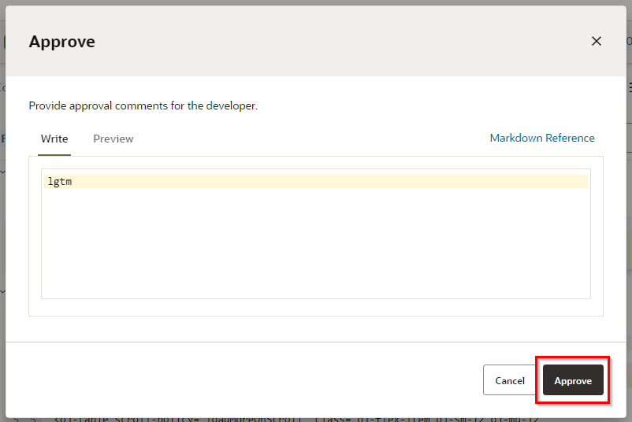
“Merge”をクリックします。

そのまま”Create a Merge Commit”をクリックします。

マージが完了しました、必要であればマージ済みのブランチを削除します。
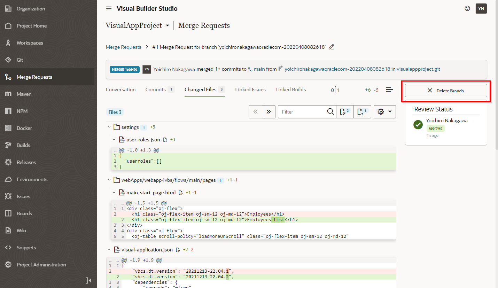
mainブランチへのマージが完了したら自動的にライブアプリケーションのデプロイが開始されます。
最後にライブアプリケーションが更新されているか確認します。

以上で、VBSを利用したビジュアル・アプリケーション開発のチュートリアルは終了です。